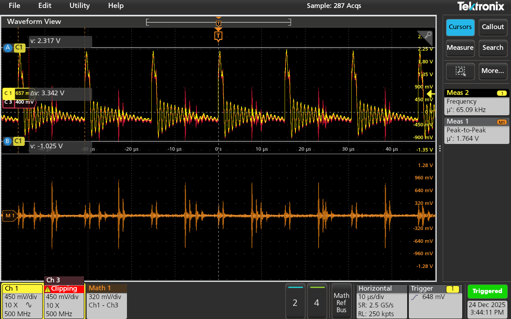
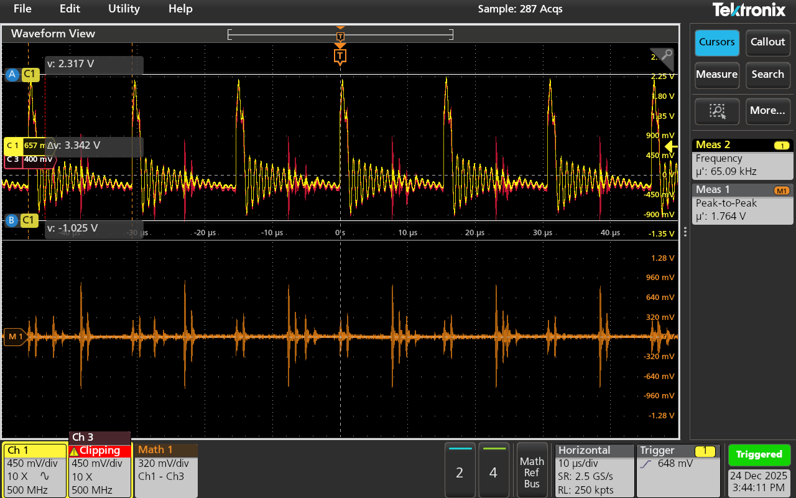

今回は扱いやすすぎるUIについてレビューします．
このオシロはタッチオシロなんですが，初の「ちゃんとした」タッチオシロを触れたので新鮮な気持ちでレビューしようと思います．
まず，UIの雰囲気だけでも見てもらいましょう．
 
左右に2枚並べてみました．
かなり見やすいんですよね．
しかも，これ超サックサクなんです．
どれくらい操作が軽快かといえば，4chをHigh Resモードにしてそこからさらに全チャネルにFFTを実行してもストレスなくスクロールできるレベルです．
FFT処理ってかなり重いので，機種によっては1chのFFTでもキツかったりします．
が，なんと4chでも特にストレスなく波形のスクロールやFFTの拡大などが指でできてしまいます．
もはや狂っているレベルで操作が軽快です．
操作が詰まる気配を感じさせません．
さすがオプション全カット50万円からの機種なだけありますわ．
※500 MHz品は170万円ほどから
ソフトウェアの方をもう少し深掘りしておきましょう．
右上のソフトキーメニューもなかなか絶妙です．
CursorやMeasureなどが配置されています．
上位機種ではハードキーが用意された上で，ソフトキーが表示されているようなのでそこだけは少し残念ですが，スペースや後述のノブ/キーの配置を考えると仕方ないかもしれないです．
高級なだけあってタッチの反応もめちゃくちゃ良いので，軽いタッチで起動できます．
だからソフトキーでもストレスをほぼ感じません．(流石にハードキーの方が便利だが)
そして，担当の方からファームウェアのアップデートをしてくれ，とあったのでアプデ後はスクロールの操作感も改善されました．
アプデ前後で，Setting Barと呼ばれるチャネルなどの設定が表示されている帯の操作感が大幅に改善されたように感じます．
アプデ前は，ドラッグ&ドロップの操作時に指での選択状態が外れがちでした．
操作状態を解除するきっかけが強すぎる，みたいな感じです．
一方でアプデ後はその辺りが緩くなったのか，滑らかに操作できるようになりました．
波形のStack表示(波形を各々の単独窓に表示するモード)で同じ窓に入れる組み合わせを設定したり，解除したりするのが楽になりました．
Stack順の入れ替えもすごくしやすくなりました．
次にハードウェアの方も触れていきます．
ノブの間隔が絶妙です．
多分，分厚い絶縁手袋なんかを装着していても隣に干渉せずに操作できると思います．
ノブのクリック感や滑らかさは十分です．
Multi Purposeノブは少し軽すぎるような気がしますが，ノブの端に指を乗せて一気に回せるので…まぁトレードオフというところかなと思います．